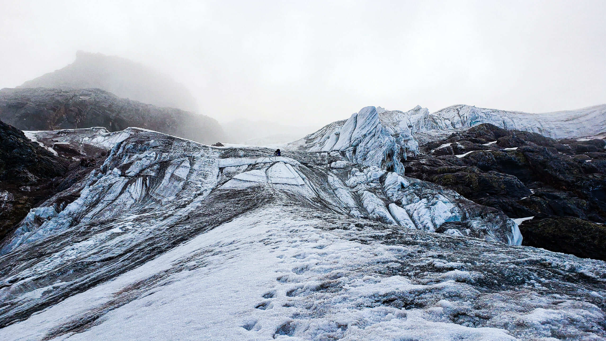
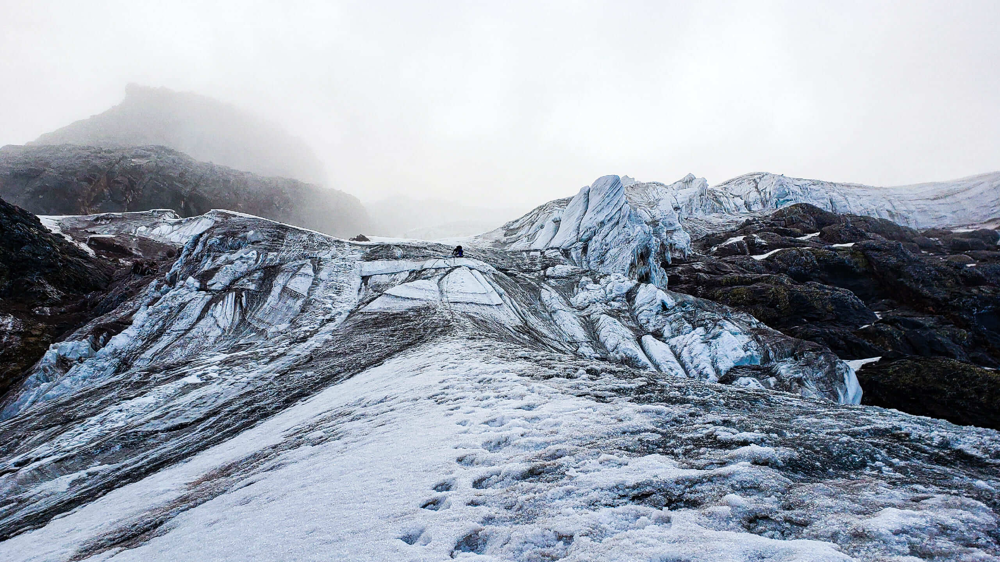

Descripcion de Viaje
El Iliniza Sur (5246m/17,211ft) es la sexta montaña más alta del país. Al suroeste de Quito, cerca del pueblo de El Chaupi. El pico Iliniza Sur presenta cambios de deglaciación causados por el calentamiento global, que afectan a sus condiciones de hielo, por lo que ahora está reservado a escaladores de hielo experimentados. Por lo tanto, se requiere experiencia en técnicas de hielo. El pico sur sugiere varias rutas desafiantes y exigentes. Esta escalada de 2 días comienza por la noche desde el refugio de Nuevos Horizontes a una altitud de 4700m.
Investigacion y Preparacion:
Conoce la ruta, las condiciones climáticas y los requisitos de equipo. Asegúrate de estar en buena forma física. Consulta a un Médico: Antes de tu viaje, consulta a un médico, especialmente si tienes condiciones preexistentes. El ascenso a la cima de los Ilinizas es una de las expediciones más populares en Ecuador. La cumbre Sur es la séptima montaña más alta del Ecuador con 5246m (17211ft). Se encuentra ubicada al oeste del Parque Nacional Cotopaxi en la Reserva Ecológica los Ilinizas a 60km/37mi al sur de Quito. Esta reserva constituye uno de los principales sitios para la conservación de la biodiversidad. Para ascender a esta montaña se necesita experiencia técnica previa, tales como conocimiento en escalada en glaciar y roca, además es importante estar en buena condición física y tener aclimatación en altura (sobre los 4000m). La cumbre del Iliniza ofrece vistas increíbles, sus paisajes rocosos y glaciares harán que te quedes asombrado, al igual que los increíbles amaneceres con las ciudades iluminadas en el fondo. También se pueden avistar los volcanes vecinos tales como el Cayambe, Iliniza Sur, Cotopaxi, Corazón, Chimborazo y muchas más. El ascenso es muy popular entre los mochileros, montañistas experimentados y personas aventureras que quiera vivir esta experiencia sin igual. El ascenso se puede realizar en un día, pero si quieres vivir la magia de ver los amaneceres en los Andes ecuatorianos, además de ganar aclimatación al dormir a más de 4500m esta es una experiencia increíble. Para esta expedición de dos días, cada dos pasajeros tendrán un guía certificado ASEGUIM/UIAGM. Si se viaja en solitario, el ascenso se realizará solamente el guía certificado con el pasajero. Anímate a vivir esta hermosa experiencia junto a nosotros y alcanzar una de las cumbres más populares de todo el Ecuador. 
